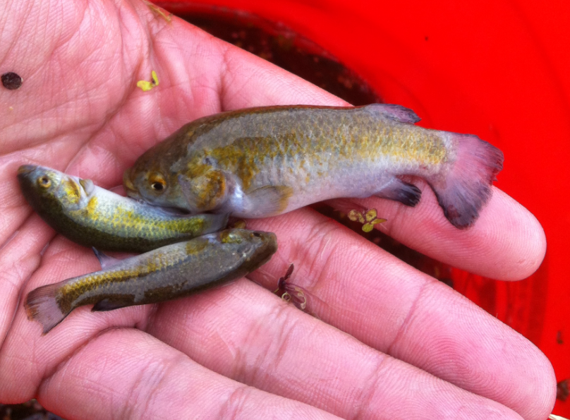

Systématique
- Ordre : Cyprinodontiformes
- Famille : Goodeidae
- Genre : Girardinichthys
- Espèce : G. nevadae
- Auteur : (Fitzsimons, 1970)

Girardinichthys nevadae est un membre du groupe des Goodeidae qui a longtemps été classé dans le genre Hubbsina avant d'être intégré au genre Girardinichthys suite à des révisions phylogénétiques. C'est une espèce de petite taille, dont l'apparence est assez discrète comparée aux membres plus colorés de sa famille.
Le mâle atteint environ 3,5 à 4 cm, tandis que la femelle est légèrement plus grande et plus massive, atteignant 5 cm. Le corps est modérément allongé et présente une coloration beige-brun à olive, avec des reflets argentés sur les opercules. Une série de petites taches ou barres sombres peu définies peut être visible sur les flancs, surtout chez les juvéniles.
Cette espèce est considérée comme "En danger critique d'extinction" (CR). Sa zone de répartition naturelle est extrêmement réduite et subit de fortes pressions anthropiques, notamment la pollution des eaux et le pompage des sources pour l'agriculture locale.
Girardinichthys nevadae est un poisson benthopélagique qui passe une grande partie de son temps à proximité du substrat ou dans les zones de végétation dense. C'est une espèce relativement calme et timide, qui nécessite un environnement sécurisant pour s'épanouir en captivité.
En raison de sa petite taille, il peut être vulnérable face à des espèces plus grandes ou agressives. Il est donc recommandé de le maintenir en bac spécifique ou avec d'autres petits Goodeidae paisibles. Il apprécie les zones d'eau calme avec peu de courant.
Mode : Vivipare matrotrophe.
Comme les autres Goodeinae, le mâle possède un andropodium pour la fécondation interne et les embryons se développent dans l'ovaire de la femelle, nourris par des trophotaeniae. La gestation dure entre 50 et 60 jours en fonction de la température.
Les portées sont de petite taille, produisant généralement entre 5 et 15 alevins par cycle. Les alevins naissent à une taille relativement grande par rapport aux parents et sont capables de se nourrir de nauplies d'artémias ou de nourriture fine dès le premier jour. Le cannibalisme parental est moins marqué que chez d'autres genres, mais une bonne couverture végétale reste nécessaire pour les jeunes.
Dimorphisme sexuel : Le mâle possède un andropodium (encoche sur la nageoire anale). Il est généralement plus svelte que la femelle. La femelle est plus grande, plus ronde et présente une zone gravidique plus sombre lors de la gestation.
Espérance de vie : 3 à 4 ans en aquarium.
L'espèce est endémique de la Laguna de Zacapu et des systèmes de sources environnants dans l'État de Michoacán, au Mexique. Son habitat est constitué d'eaux calmes, souvent stagnantes ou à courant très lent, riches en sédiments organiques et en végétation submergée (Ceratophyllum, Potamogeton).
Les eaux de son milieu d'origine sont généralement fraîches (18-22°C) et présentent un pH neutre à légèrement alcalin. La présence de débris végétaux et d'une microfaune abondante est cruciale pour son alimentation naturelle.
Répartition

Origine naturelle :
- Mexique : État de Michoacán (Laguna de Zacapu).
- Limité à un système de sources et de lagunes très localisé.
- Endémique strict de cette région.
Très rare en dehors des cercles de spécialistes de la conservation. Les populations sauvages sont en déclin constant.
Paramètres de maintenance
Température : 18 à 23 °C. Éviter les températures élevées prolongées.
pH : 7,0 à 7,8.
GH : 8 à 15 °dGH.
Courant : Très faible.
Volume conseillé : 40–60 L pour un petit groupe.
Régime alimentaire
Régime : Carnivore à tendance insectivore.
Se nourrit de petits invertébrés aquatiques et de larves. En aquarium, il accepte les nourritures sèches fines, mais préfère nettement le vivant ou le congelé (daphnies, artémias, cyclops).